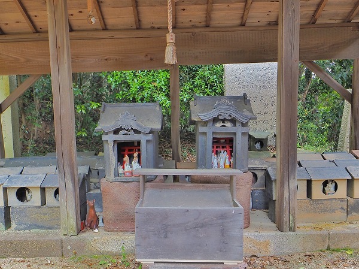

神田稲荷神社/岡山県
岡山県の瀬戸内市をウロウロしている。
瀬戸内市、というと馴染みはないが牛窓、といえば馴染みのある方も多かろう。
そんな瀬戸内市の尻海という在にある神社へ向かう。
曲がりくねった狭い道が入り組んで、しかもカーナビが示すのは入口とは全然違う場所で辿り着くまで難儀した。
やっとのことで辿り着いたのがこちら。
神田稲荷神社である。
拝殿の破風屋根の上には小屋のようなものがある。
いかにも後付けしたような感じが違和感ありありだ。
因みに訪れた日は拝殿後ろの本殿は修理中のようでシートで覆われてよく見えなかった。
後で確認してみるとかなり立派な建築だった。
残念無念。
拝殿両脇のキツネが備前焼なのは流石ですね。

傍らには小さな祠がたくさん並んでいた。
中を見てみると…
キツネの陶器が入っていた。
要らなくなったキツネを引き取ったのか、あるいは何かの願掛けなのだろうか？
で、拝殿にお邪魔します。
今のところ屋根の上の小屋みたいな建物以外はそれと言って変わった神社ではない。
実はこの神社に来たのはある絵馬が見たかったからなのだ。
それがこれです。
如何であろう。
5人の女性が輪になっているように見えるが、よ～く見ると胴体は10体ある。
これはだまし絵の一種である。
5つの頭に10の身体で五頭十体図という。
頭と足と手がそれぞれ2人分を兼ねており、胴体だけが10体あるという不思議な絵だ。
画面左拡大。
3つの頭に6つの身体となっている。
胴体の丸い部分には胎児が描かれている。
つまりこの十体は妊娠1か月から10か月の胎児の様子を示しているのだ。
上から反時計回りに1か月、２か月…６か月と続く。
１か月目など細胞分裂したて、みたいな状態だが、６か月ともなるとそれなりに胎児っぽくなっている。
画面右手拡大。
こちらは７か月から１０か月までの胎児。
最後の方なんて胎児というよりオジサンみたいになっちゃってます…。
つまり10体の胎児の成長を描くことで安産を祈願している絵馬だ、と考えられる。
この絵馬、大正元年に奉納されているが、実は元ネタがある。
オリジナルは明治14年に歌川国俊という絵師が「妊婦炎暑戯」という題で浮世絵として発表されている。
歌川国俊とは幕末の美人画で名を馳せた初代歌川国貞の弟子であり、その後二代目の弟子となっている。
さらに三代目歌川国貞が明治14年に「新発明 五頭十体の女の図」という浮世絵を発表している。
これは五頭十体図なのだが、胴体の部分に胎児はいない。10人の遊女の絵だ。
つまり三代目歌川国貞の「新発明 五頭十体の女の図」を発表し、それを参考に兄弟弟子の歌川国俊が「妊婦炎暑戯」を発表した。
それを見た市井の絵師が絵馬にした、という流れのようだ。
（三代目国貞と国俊の浮世絵は共に明治14年発表となっているが、国貞がわざわざ「新発明」と謳っているからには国貞の方がオリジナルなのだろう）
ただ、このような図案の絵馬は他に類例はなく、そもそも国俊の「妊婦炎暑戯」も現存するものは2枚しかないという（某オークション情報）。
そう考えると物凄く細い縁を辿って江戸で出回った浮世絵がこの岡山の地に辿り着いた事が判る。
何とも不思議な伝言ゲームである。
ちなみにこの絵馬の絵師の名前も記されているが達筆過ぎてよく判りません。
鬼明？逸明？かなあ？ご存知の方、教えてくださいませ。
奉納者の方は字が滲んでしまって判別不明だった。
隣にあった絵馬。これも良い感じでした。
で、最初に気になった破風屋根の上の小屋。
中から見たらこんな感じでした。
単なる明かり取りのために後付けで付けたのかな。
にしては無理があるなあ。
2023.05.
珍寺大道場 HOME